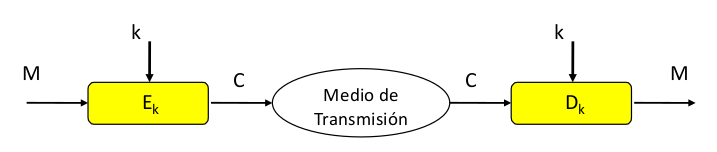

6.1.4.1 Criptografía de clave privada
1. Introducción
La criptografía de clave privada (simétrica) o cifrado simétrico se basa en un secreto compartido entre la entidad que cifra el mensaje y la que lo quiere descifrar, es decir, utiliza la misma clave en el proceso de cifrado que en el de descifrado.
Si se analizan los métodos utilizados para salvaguardar la confidencialidad de los mensajes desde los primeros tiempos de la criptografía hasta mediados de los años setenta (criptografía clásica), se puede ver que sólo se hacía uso de métodos simétricos, que exigían necesariamente que el emisor y el receptor se pusieran previamente de acuerdo en la clave que iban a utilizar. El método de Vigenère es un claro ejemplo.
Figura 1. Cifrado simétrico.
2. Elementos fundamentales de la clave privada o simétrica
La criptografía de clave privada considera que los mensajes intercambiados por los usuarios son cifrados y descifrados con una misma clave secreta entre ambos.
Al usar una misma clave, es una gran ventaja a la hora de gestionar grupos reducidos y los algoritmos utilizados son más rápidos.
Un problema que tienen es que cuando dos entidades se comunican, cada una no puede autenticar a la otra, es decir, asegurar su identidad.
Dentro de los algoritmos de clave privada se tienen:
Cifradores de flujo: Pueden ser síncronos o asíncronos. Se caracterizan porque la información a cifrar se divide en caracteres (bytes) o bits. Tanto el emisor como el receptor comparten una clave que se llama 'serie cifrante'. Ejemplo: Cifradores de flujo RC4 (bit a bit).
¿Cómo funciona? . El mensaje en claro se cifra bit a bit o byte a byte. Dicha operación de cifra consiste en una operación XOR del texto en claro con una secuencia cifrante de bits S i que debe cumplir ciertas condiciones para que tenga una apariencia aleatoria y sea segura.
Para descifrar, se vuelve a realizar un XOR del criptograma con la misma secuencia S i pues esta función XOR es involutiva (función matemática que es su propia inversa).
Cifradores de bloque: La información a cifrar se divide en bloques de una determinada longitud (tamaños típicos: 64, 128, 256 bits). Dentro de los cifradores de bloque el más conocido es DES (Data Encryption Standard). Y dentro de los modos de operación se tienen: ECB, CBC, OFB y CTR.

Figura 2. Cifrado por bloques.
2.1 Ejemplo cifrado por bloques AES
Es un algoritmo capaz de proteger información sensible el cual trabaja repitiendo la misma operación múltiples veces con un bloque fijo de 128 bits y tamaños de llave 128, 192 o 256 bits.
NOTA: En la actualidad, NO se conocen vulnerabilidades de este cifrado.
Ejemplo:
- Cifrado en Bloque 128b.
- Matriz estado 4x4.
- vueltas 10, 12, 14.
- AddRoundKey Xor mensaje y clave.
- SubBytes Sustitución de bits con tabla.
- ShiftRows Rotación de bits.
- Mixcolums Mezcla de columnas.
| Clave AES | Subclaves (Nr +1) | Clave expandida |
| 128 bits | 11 de 128 bits | 1.408 bits |
| 192 bits | 13 de 128 bits | 1.664 bits |
| 256 bits | 15 de 128 bits | 1.920 bits |
2.2 Ejemplo cifrado por bloques DES
Este algoritmo está diseñado para cifrar y descifrar bloques de datos que constan de 64 bits bajo el control de una clave de 56 bits (simétrico). Los otros 8 bits restantes, se utilizan para el control de paridad.
Este cifrado se considera actualmente inseguro.
2.3 Ejemplo cifrado por bloques 3DES
Triple DES se le llama al algoritmo que hace triple cifrado del DES. También es conocido como TDES o 3DES, en 1998 IBM desarrollo 3DES o Triple DES (TDES) que sería sucesor directo de DES.
Cuando se descubrió que una clave de 56 bits no era suficiente para evitar un ataque de fuerza bruta, TDES fue elegido como forma de agrandar el largo de la clave sin necesidad de cambiar de algoritmo dé cifrado este método de cifrado es inmune al ataque por encuentro a medio camino, doblando la longitud efectiva de la clave (112 bits), pero en cambio es preciso triplicar el número de operaciones de cifrado, haciendo este método de cifrado muchísimo más seguro que el DES. Por tanto, la longitud de la clave usada será de 168 bits (3x56 bits), aunque como se ha dicho su eficacia solo sea de 112 bits. Se continúa cifrando bloques de 64 bits.
El Triple DES está desapareciendo lentamente, siendo reemplazado por el algoritmo AES. Sin embargo, la mayoría de las tarjetas de crédito y otros medios de pago electrónicos tienen como estándar el algoritmo Triple DES (anteriormente usaban el DES). Por su diseño, el DES y por lo tanto el TDES son algoritmos lentos. AES puede llegar a ser hasta 6 veces más rápido y hasta la fecha no se ha encontrado ninguna vulnerabilidad.
2.4 Ejemplo cifrado de flujo/bloques RCx
RC4 es el sistema de cifrado de flujo con bytes orientados a operaciones, se emplean en algunos protocolos como SSL para proteger el tráfico o WEP para añadir seguridad en las redes inalámbricas, pero es muy inseguro.
RC5 es un un algoritmo de cifrado de bloques con tamaño variable (34, 68 o 128 bits) con un tamaño e llave variable, así como un número variable de vueltas (0 - 255).
RC6 es una unidad de cifrado por bloques de clave simétrica derivada a partir de RC5.
RC5 y RC6 no se usan.
3. ¿Cómo funciona el cifrado simétrico?
El emisor toma el mensaje en claro M que transforma mediante un algoritmo Ek utilizando la clave k secreta para obtener el mensaje cifrado C. Posteriormente, el mensaje cifrado se transmite al receptor, que recibe el criptograma C.
El receptor para la operación de descifrado, toma como entrada el criptograma C y le aplica el algoritmo Dk igual que el de emisión Ek pero en modo descifrado, utilizando la misma clave k, para obtener el mensaje en claro M. Dk es el proceso inverso a Ek.

4. Confidencialidad e integridad en el cifrado simétrico
La confidencialidad y la integridad se lograrán si se protegen las claves en el cifrado y en el descifrado, es decir, ambas se obtienen simultáneamente si se protege k, la clave secreta compartida.
5. Algoritmos de cifrado simétrico
- DES
- 3DES
- AES
- RC4
6. Ventajas y desventajas del Cifrado Simétrico
- Ventajas: La distribución de claves es muy sencilla.
- Desventajas:
- La distribución de claves es poco segura.
- El número de claves necesarias para comunicarse entre un grupo de personas es muy elevado, cada uno tendrá la suya propia.
7. Herramientas de cifrado de la información
VeraCrypt. Es un software de código abierto para cifrar archivos, carpetas, unidades USB extraíbles, discos duros completos, e incluso el disco duro donde se encuentra el propio sistema operativo instalado. Es multiplataforma, actualmente es compatible con sistemas operativos Microsoft Windows, cualquier sistema basado en Linux, y también es compatible con macOS. Este software está basado en el popular TrueCrypt 7.1a.
DiskCryptor. Herramienta gratuita que permite cifrar particiones de disco en los sistemas Windows. También es capaz de cifrar todo el disco con todas las particiones, incluyendo la partición donde está instalado el sistema operativo Windows, de esta manera, todo lo que escribamos en dicho disco estará cifrado para evitar que alguien pueda leerlo si roba o se hace físicamente con nuestro disco duro.
Los algoritmos de cifrado simétrico que soporta son AES con 256 bits, Twofish y también Serpent, incluyendo las combinaciones de todos ellos para dotar al sistema de una mayor seguridad.
8. Cifrado simétrico de archivos
El cifrado simétrico de archivos permite proteger el contenido de un archivo confidencial que pueda necesitar enviar a través de un medio inseguro, por ejemplo, un fichero adjunto a un correo electrónico. Un ejemplo de uso sería el envío de facturas o información de acceso a cuentas bancarias entre la secretaria y dirección de un centro educatibo, que de otra manera sería un riesgo irresponsable. De esta forma, el destinatario del archivo puede descifrar el fichero usando la clave simétrica que previamente debe haberse acordado, utilizando el mismo algoritmo con el que se ha cifrado (como por ejemplo 3DES, BlueFish, IDEA, AES, etcétera).
Existen muchas herramientas para poder realizar esta acción, pero en este curso se va utilizar OpenPGP, un software de cifrado simétrico, asimétrico e híbrido, disponible para muchas plataformas.
Para los sistemas Windows se utilizará el programa Gpg4win. Este programa utiliza por debajo las librerías de OpenPGP. En el caso de usar cualquier distribución de GNU/Linux, también hay disponibles muchas versiones como el KGpg (para escritorio KDE), GnuPG (en línea de comandos), etcétera.
Personalmente, suelo utilizar frecuentemente el comando gpg2 desde la shell de GNU/Linux, ya que permite automatizar mediante scripts el cifrado de muchos archivos sin tener que hacerlo de forma gráfica.
Obra publicada con Licencia Creative Commons Reconocimiento No comercial Compartir igual 4.0